Chapter 10 Base R Plotting
10.1 Load A Big Data Set
Let use some of the methods above, and others, to analyze a real data set. The Behavioral Risk Factor Surveillance System (BRFSS) is an annual telephone survey of 350,000 people in the United States. As its name implies, the BRFSS is designed to identify risk factors in the adult population and report emerging health trends. For example, respondents are asked about their diet and weekly physical activity, their HIV/AIDS status, possible tobacco use, and even their level of healthcare coverage. The BRFSS Web site (http://www.cdc.gov/brfss) contains a complete description of the survey, including the research questions that motivate the study and many interesting results derived from the data. We will focus on a random sample of 20,000 people from the BRFSS survey conducted in the year 2000. While there are over 200 variables in this data set, we will work with a smaller subset.
We begin by loading the data set of 20,000 observations into the R workspace and examine some of its attributes.
After a brief time, a new data frame cdc appears in the workspace. Each row representing a case (a person surveyed) and each column representing a variable.
To get general information on each variable, use the summary() function.
## genhlth exerany hlthplan smoke100
## excellent:4657 Min. :0.0000 Min. :0.0000 Min. :0.0000
## very good:6972 1st Qu.:0.0000 1st Qu.:1.0000 1st Qu.:0.0000
## good :5675 Median :1.0000 Median :1.0000 Median :0.0000
## fair :2019 Mean :0.7457 Mean :0.8738 Mean :0.4721
## poor : 677 3rd Qu.:1.0000 3rd Qu.:1.0000 3rd Qu.:1.0000
## Max. :1.0000 Max. :1.0000 Max. :1.0000
## height weight wtdesire age gender
## Min. :48.00 Min. : 68.0 Min. : 68.0 Min. :18.00 m: 9569
## 1st Qu.:64.00 1st Qu.:140.0 1st Qu.:130.0 1st Qu.:31.00 f:10431
## Median :67.00 Median :165.0 Median :150.0 Median :43.00
## Mean :67.18 Mean :169.7 Mean :155.1 Mean :45.07
## 3rd Qu.:70.00 3rd Qu.:190.0 3rd Qu.:175.0 3rd Qu.:57.00
## Max. :93.00 Max. :500.0 Max. :680.0 Max. :99.00The variables genhlth and gender are character variables. The summary() command reports the frequencies of the unique values. The variables exerany, hlthplan, and smoke100 are yes/no variables coded as 1=yes or 0=no. They represent the existence or absence or regular exercise, the presence of a healthcare plan, and whether or not the person smoked 100 cigarettes in their lifetime. The means are the proportion of “yes” responses. The variables height, weight, wtdesire, and age are numeric variables. The summary() command gives information on the means, medians, quartiles and range of values.
Since this is a very large data set, we wouldn’t want to list all the data. We can use the functions head() and tail() to list the first and last few rows.
## genhlth exerany hlthplan smoke100 height weight wtdesire age gender
## 1 good 0 1 0 70 175 175 77 m
## 2 good 0 1 1 64 125 115 33 f
## 3 good 1 1 1 60 105 105 49 f
## 4 good 1 1 0 66 132 124 42 f
## 5 very good 0 1 0 61 150 130 55 f
## 6 very good 1 1 0 64 114 114 55 f## genhlth exerany hlthplan smoke100 height weight wtdesire age gender
## 19995 good 0 1 1 69 224 224 73 m
## 19996 good 1 1 0 66 215 140 23 f
## 19997 excellent 0 1 0 73 200 185 35 m
## 19998 poor 0 1 0 65 216 150 57 f
## 19999 good 1 1 0 67 165 165 81 f
## 20000 good 1 1 1 69 170 165 83 m10.2 Histograms
Histograms are one of the fundamental ways that we can represent a data set. In a histogram we typically have the frequency or proportion on the y-axis, and the x-axis is segmented into mutually exclusive sections. The height of the bins corresponds to amount of observations that fall within a specific range. We can create a histogram using the hist() function.
Most of the basic R plots have default settings. For example, the x-axis, y-axis, number of bins, titles, and labels all change depending on the vector supplied into the function.
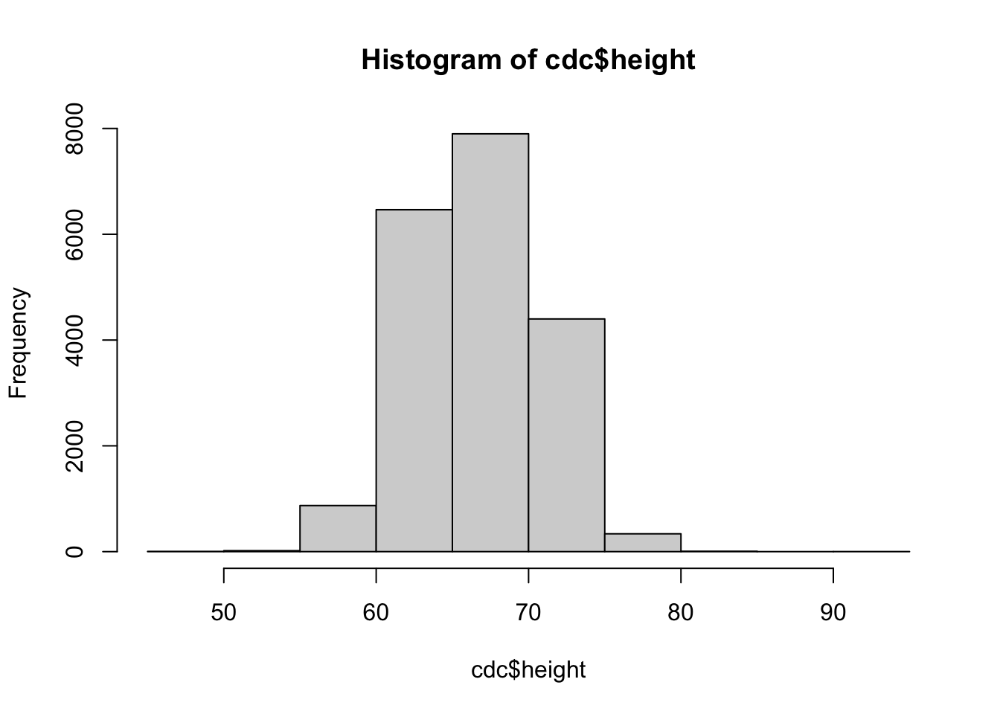
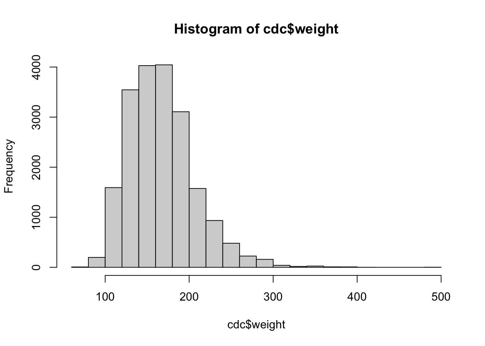
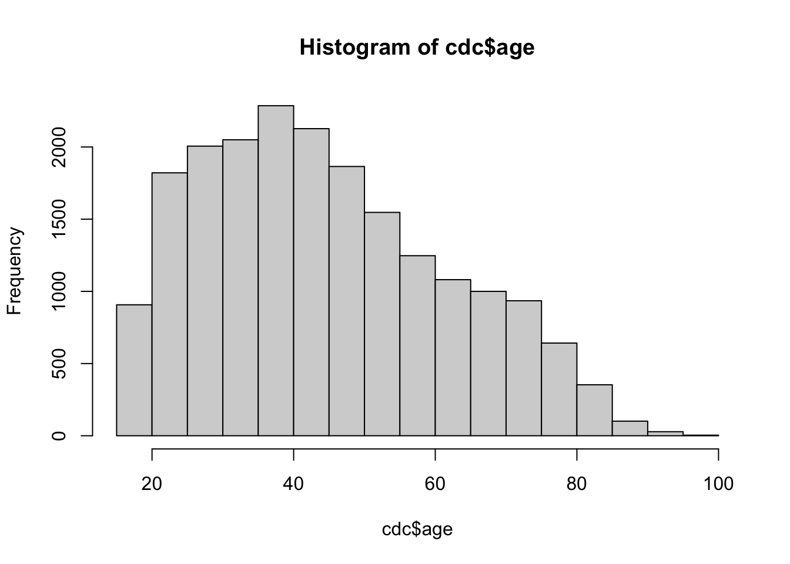
The output appears in the Plots panel of RStudio. You can use the arrows to the left of the Zoom button the switch among the three plots.
There are several settings in base R plots that are similar. For example, in base R plots typically we can change the title, x-axis label, and y-axis label with main, xlab, and ylab arguments.
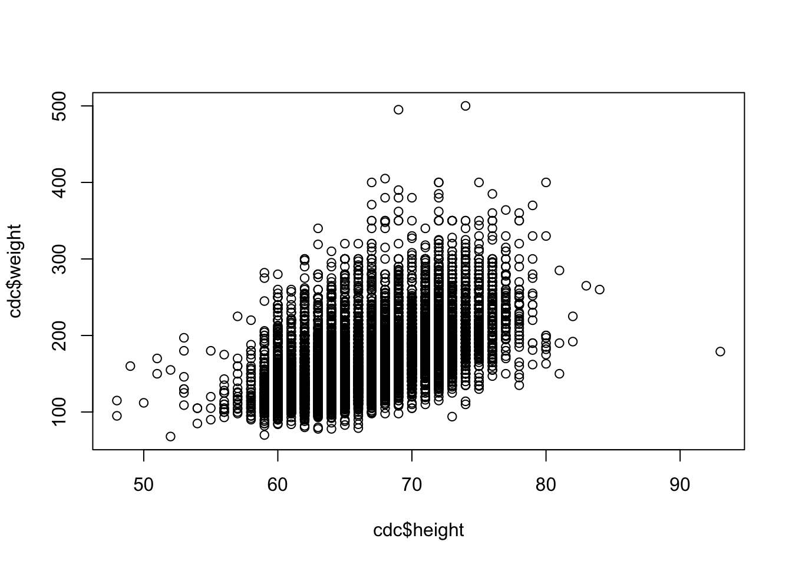
There are also function specific arguments. For example, we can control the number of bins to create.
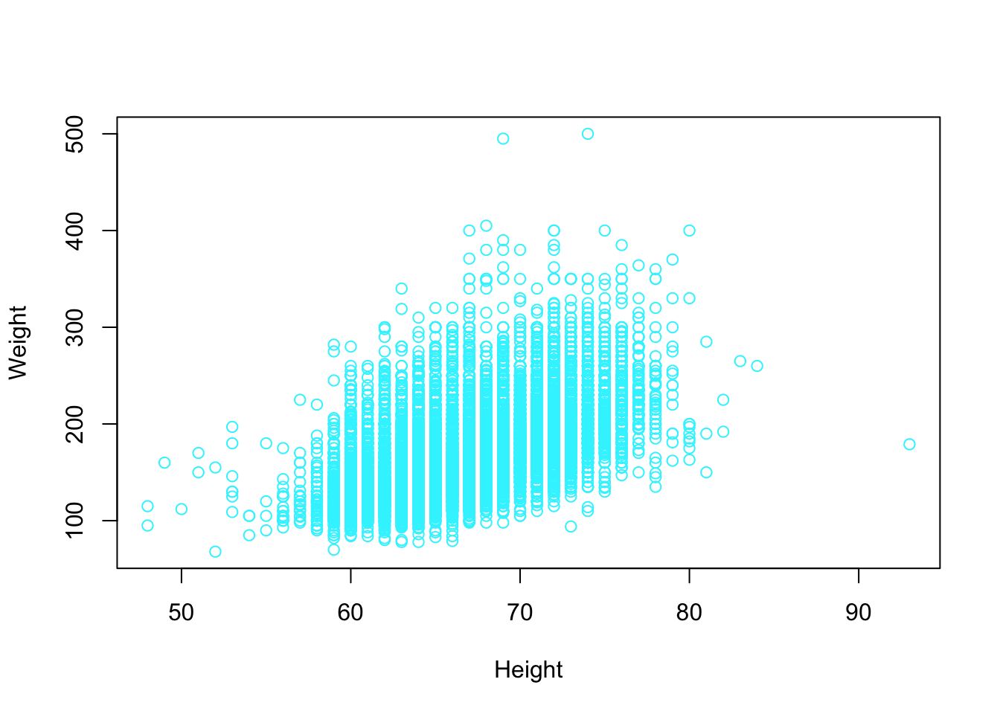
Use col argument to change the colors used for the bars. By using the border argument, you can even change the color used for the border of the bars.
hist(cdc$weight, breaks=20, main="Distribution of Weight",
xlab="Weight (kg)",
border = "mediumpurple4",
col = "mediumpurple1")There are several ways we can add colors to R.
Using Color Names:
Rprogramming has names for 657 colors. You can take a look at them all with thecolors()function, or simply check this R color pdf.Using Hex Values as Colors: Instead of using a color name, color can also be defined with a hexadecimal value. We define a color as a 6 hexadecimal digit number of the form
#RRGGBB. Where theRRis for red,GGfor green andBBfor blue and value ranges from00toFF. For example,#FF0000would be red and#00FF00would be green similarly, #FFFFFF would be white and#000000would be black.Using RGB Values The function
rgb()allows us to specify red, green and blue component with a number between 0 and 1. This function returns the corresponding hex code discussed above.Using a Color Palette: R programming offers 5 built in color palettes which can be used to quickly generate color vectors of desired length. They are:
rainbow(),heat.colors(),terrain.colors(),topo.colors()andcm.colors(). We pass in the number of colors that we want
You can also place values on top of bars; which will help you interpret the graph correctly. You can add them by setting the labels argument to TRUE.
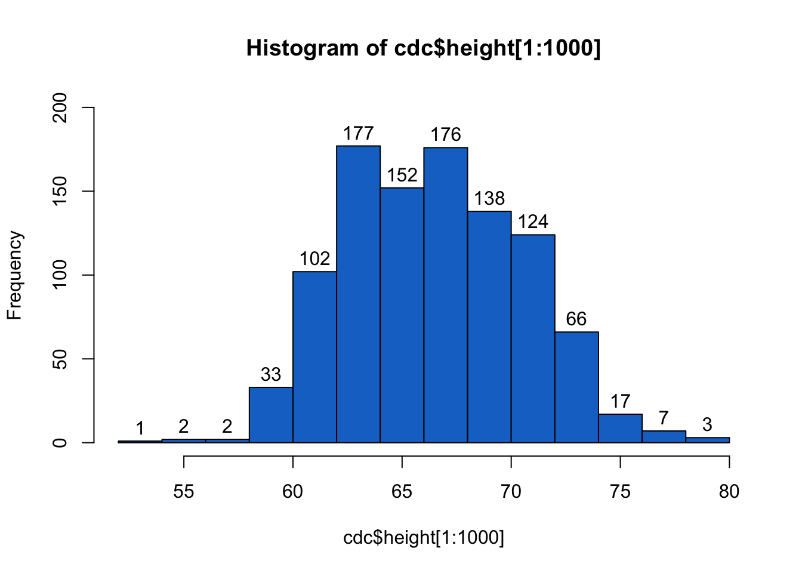
Often you want to compare the distributions of different variables within your data. You can overlay the histograms by setting the add argument of the second histogram to TRUE.
# random numbers
h1 <- rnorm(1000,6)
h2 <- rnorm(1000,4)
# Overlay two histograms
hist(h1,
col=rgb(1,0,0,0.25))
hist(h2,
col=rgb(0,0,1,0.25),
add=TRUE)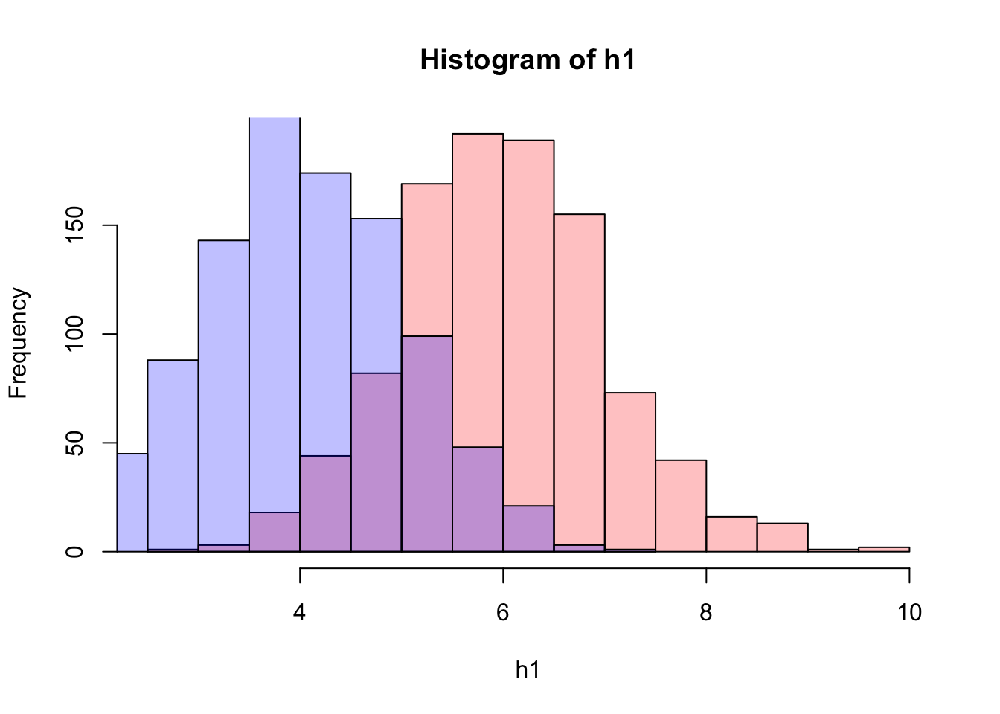
For more options, look up “hist” in the Help panel of RStudio.
10.3 Boxplot
Let’s produce a boxplot for the first 1000 values of the height variable.
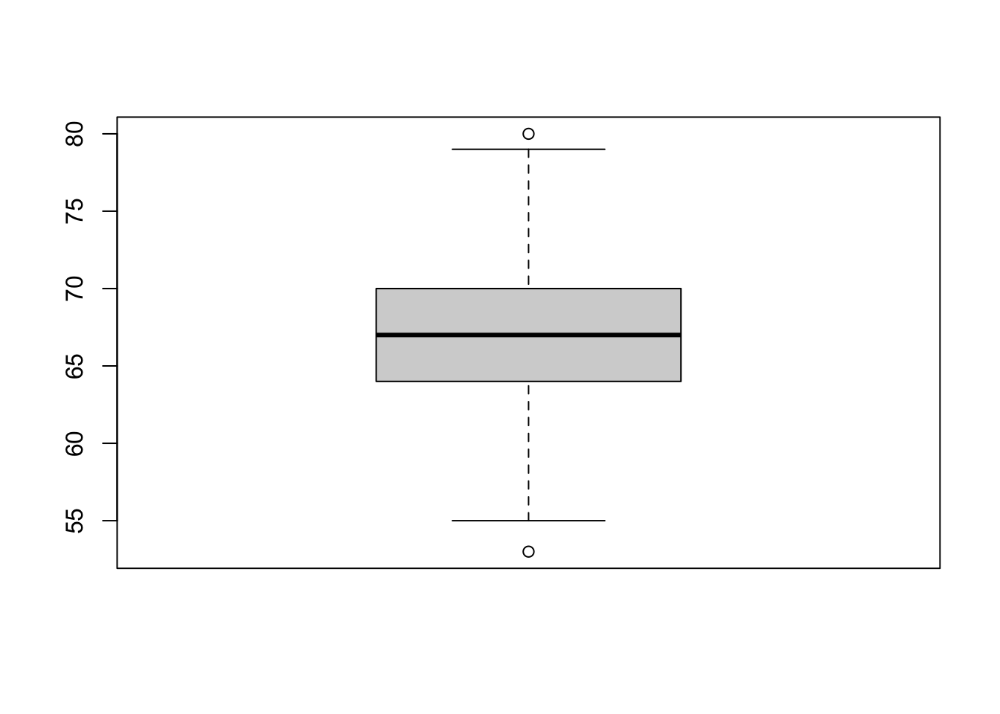
The line in the center is the median. The bottom and top of the box are drawn at the first (\(Q_1\)) and third (\(Q_3\)) quartiles (same as the 25th and 75th percentiles). The difference between the third and first quartiles is called the interquartile range (\(Q_3-Q_1\)). This is the height of the box. The lines above and below the box are called the whiskers. The upper whisker is either the third quartile plus 1.5 times the interquartile range, \(Q3 +1.5(Q_3-Q_1)\), or the largest data value, whichever is smallest. Similarly, the lower whisker is either the first quartile minus 1.5 times the interquartile range, \(Q1-1.5(Q_3-Q_1)\), or the smallest data value, whichever is largest. If data values exceed the whiskers, they are considered outliers (according to the \(IQR\) method, see Homework 2) and are plotted as circles. Boxplots are often used to represent numeric data.
One can use boxplots to compare different groups using ~ character. On the right side of ~ is the numeric variable, and the left side of ~ is a grouping variable (character, logical, factor).

10.4 Scatter Plot
We can create a scatter plot using the plot() function in R. This is generic function, which means that it will behave differently depending on the inputted values. For now we will on creating a simple \(X\) vs \(Y\) plot, which is what we typically want.
## Help on topic 'plot' was found in the following packages:
##
## Package Library
## graphics /Library/Frameworks/R.framework/Versions/4.0/Resources/library
## base /Library/Frameworks/R.framework/Resources/library
##
##
## Using the first match ...# Help file for plot when using a simple X vs Y input
?plot.default
# Run the command
plot(cdc$height, cdc$weight)
Notice that this help file has many of the same arguments as we saw with the hist() function. For example, xlab, ylab, main, and col. A lot of Base R plotting functions are related and use the same techniques and arguments.
# Plot using HEX color system
plot(cdc$height, cdc$weight,
xlab = "Height",
ylab = "Weight",
col = "#33F3FF")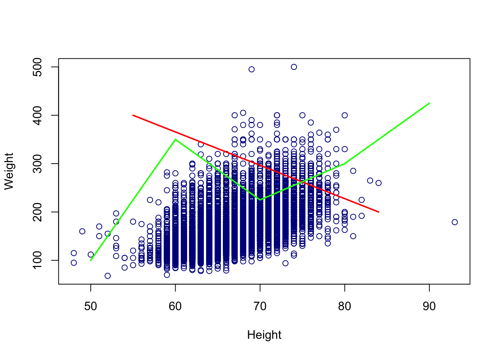
Other interesting features we may want to consider is having different colors points on our plot. We can supple the col argument for a vector the colors we want plotted. If the vector of is the same length as the number of rows in our data set, then the index of the vector of colors corresponds to the index of the point being plotted. If the vector of colors is not the size, then colors are generated using recycling. For example, below only two colors were supplied. This means every other point in the data set had a different color.
# Plot using HEX color system
plot(cdc$height, cdc$weight,
xlab = "Height",
ylab = "Weight",
col = c("#33F3FF", "#A833FF"))
There are lots of other features we can change. Consider changing cex, type, bg, pch, ylim, xlim.
10.5 Pie Charts
We will now look at some of the qualitative data that are not numbers, but categories or groups. The table() function can be used to tabulate categorical data. The genhlth variable has five categories, we can use table() to find the frequencies.
##
## excellent very good good fair poor
## 4657 6972 5675 2019 677Since the sample size is 20,000, we can divide by n to get proportions.
##
## excellent very good good fair poor
## 0.23285 0.34860 0.28375 0.10095 0.03385Pie charts are also used for categorical data. Options are also available for the pie() function.

Options are also available for the pie() function.
colors = c("green", "blue", "yellow", "pink", "red")
pie(table(cdc$genhlth)/20000, col = colors, main = "General Health")
10.6 Adding Straight Lines
Often you want to draw attention to specific values or observations in your graphic to provide unique insight. You can do this by adding markers to your graphic. For example, adding mean line will give you an idea about how much of the distribution is above and below the average. You can add such marker by using the abline() function.
# Add a line on a histogram
hist(cdc$weight, breaks=20, main="Distribution of Weight",
xlab="Weight (kg)",
border = "mediumpurple4",
col = "mediumpurple1")
abline(v=mean(cdc$weight),
col="mediumblue",
lty=2,
lwd=2)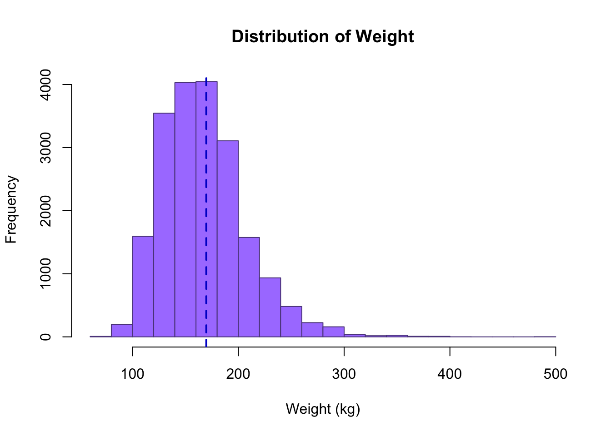
# Add a line on scatter plot
plot(cdc$height, cdc$weight,
xlab = "Height",
ylab = "Weight",
col = "darkblue")
# Make a solid line
abline(h = median(cdc$weight), col = "red", lwd = 2)
# Make a dashed line
abline(h = median(cdc$wtdesire), col = "red", lty = 2)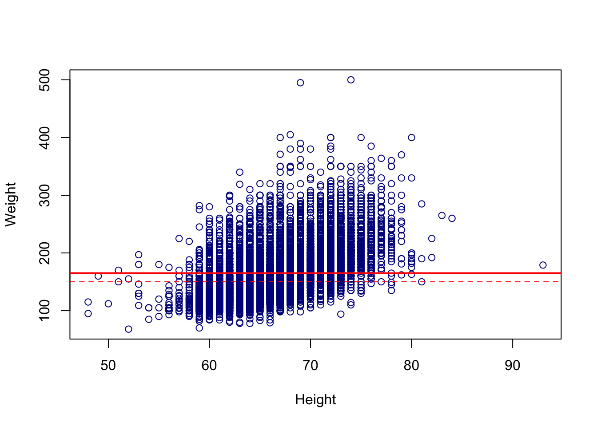
10.7 Adding Lines Between Points
Sometimes, we would rather add a line connecting two points, rather than a continuous vertical, horizontal or linear line. To do this we can use the lines() function.
# Add a line on scatter plot
plot(cdc$height, cdc$weight,
xlab = "Height",
ylab = "Weight",
col = "darkblue")
# Add a line connecting two points.
lines(x = c(55, 84),
y = c(400, 200), col = "red", lwd = 2)
# Add a line connecting a series of points
lines(x = c(50, 60, 70, 80, 90),
y = c(100, 350, 225, 300, 425), col = "green", lwd = 2)10.8 Adding Individual Points
Similarly we can also add points to any base R graph using the points() function.
# Add a line on scatter plot
plot(cdc$height, cdc$weight,
xlab = "Height",
ylab = "Weight",
col = "darkblue")
# Make a solid line
points(mean(cdc$height), mean(cdc$weight), col = "red", pch = 16)
# Sample random points to plot
set.seed(62)
random_index = sample(1:nrow(cdc), 20)
points(cdc$height[random_index], cdc$weight[random_index],
col = "yellow", pch = 8)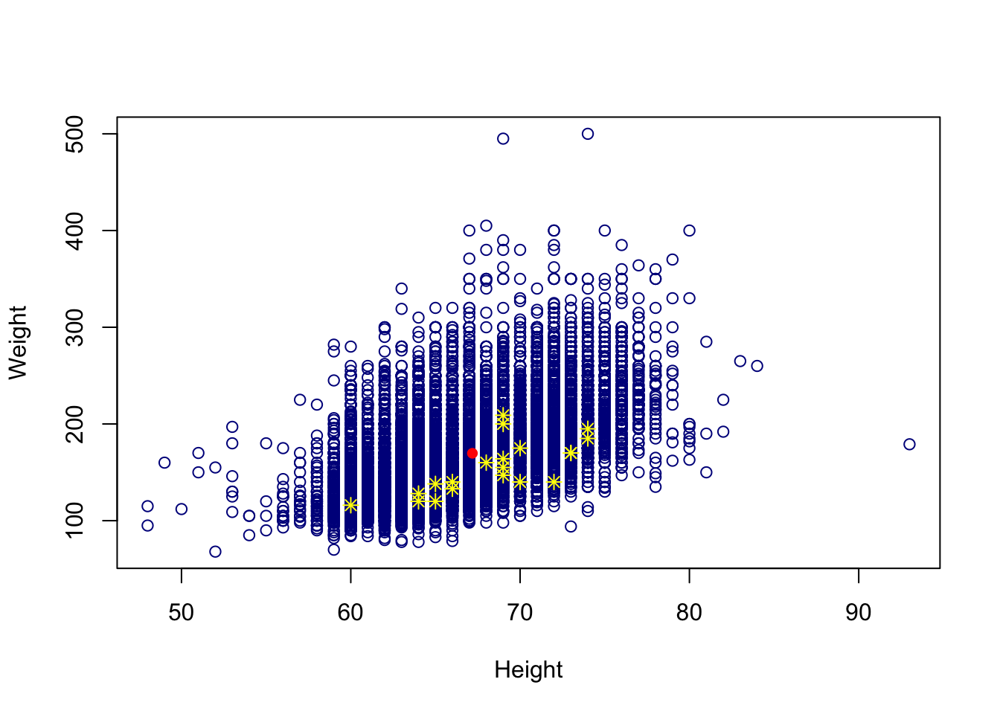
In the points() help file we can see a separate section called pch values which contains the different types of points that Base R can create.
Notice that the abline() function had arguments lty, and lwd. In addition, the points() function had the arguments cex and bg. The description for these arguments is in the par help file which contains a master set of graphical parameter arguments. In this file we can also see that main, xlab, and ylab are also listed.
10.9 The par() Help File
The par file contains graphical arguments that are common in base R graphics functions. We can look inside this help file for even more arguments that may not be listed in the Base R plotting functions like hist(), plot(), points(), and abline().
It is also a function that can adjust global plotting window parameters. For example, suppose we wish to have multiple plots on plotting window. We can control this with mfrow. When adjusting global plotting parameters it is best to always revert back to the default settings when you are done.
# Change plot window to have 3 columns and 1 row of plots
par(mfrow = c(1, 3))
# Three plots in one window
hist(cdc$height)
hist(cdc$weight)
hist(cdc$age)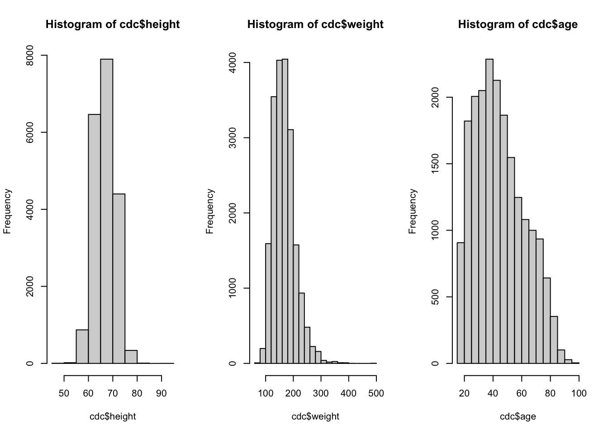
10.10 Adding Legends
We can also consider adding a legend to our new graph using the legend() function. This function lets us put our own unique labels on different plotting aspects we created. Note that the function arguments like col, lty, and pch are used to dictate what should be on the legend.
We control were the legend goes by using the first argument. This first argument x can be the the location on the x-axis, or it can be a keyword such as: “bottomright”, “bottom”, “bottomleft”, “left”, “topleft”, “top”, “topright”, “right” and “center”.
# Add a line on a histogram
hist(cdc$weight, breaks=20, main="Distribution of Weight",
xlab="Weight (kg)",
border = "mediumpurple4",
col = "mediumpurple1")
abline(v=mean(cdc$weight),
col="mediumblue",
lty=2,
lwd=2)
legend("topright",
legend = c("Mean Weight"),
lty = 2,
col = "mediumblue",
lwd = 2)
# Add a line on scatter plot
plot(cdc$height, cdc$weight,
xlab = "Height",
ylab = "Weight",
col = "darkblue")
# Make a solid line
abline(h = median(cdc$weight), col = "red", lwd = 2)
# Add a single point
points(mean(cdc$height), mean(cdc$weight), col = "red", pch = 16)
# Sample random points to plot
set.seed(62)
random_index = sample(1:nrow(cdc), 20)
points(cdc$height[random_index], cdc$weight[random_index],
col = "orange", pch = 8)
# Make a legend
legend("topleft",
legend = c("All Data Values",
"Mean",
"Sample",
"Median Weight"),
pch = c(1, 16, 8, NA),
col = c("darkblue", "red", "orange", "red"),
lty = c(NA, NA, NA, 1))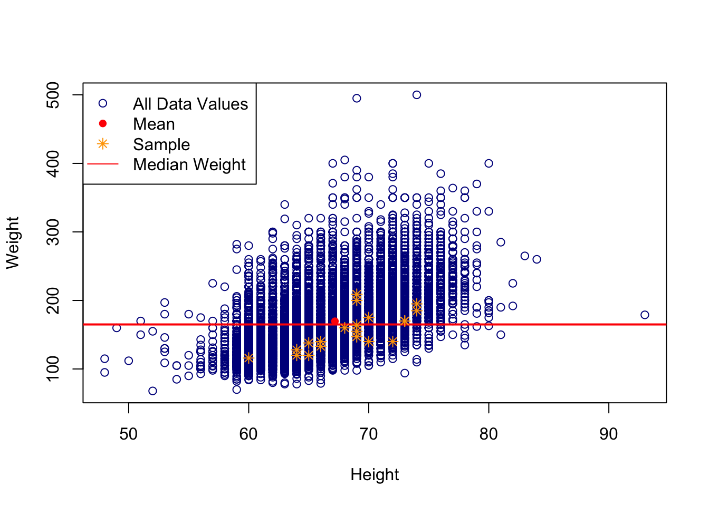
10.11 What makes a good plot?
It takes practice both to create and identify good plots. In general plots should have the following properties.
Informative Title: A title should contain a concise description of what is being plotted. In general, when thinking of a title consider including: who, what, when, where, why, and how. Depending the context and audience you might not need all of these elements. For instance, if you have a standard scatter plot, you do not necessarily need to list “Scatter Plot”. This font should be larger compared to other text on the plot. The title should fit comfortably on the figure.
Appropriately Labeled Axis: Use appropriate axis labels. Instead of simply saying “X” or “Y”, say what the variables of these axises are. Include the units of measurement on theses axis labels. Use correct capitalization and punctuation. Make sure the font is reasonably sized. A rule of thumb is for it to be about half the size of the title font. Make sure tick marks and unit intervals on an axis are consistent and appropriate for the scale.
Nothing Cutoff: Points, lines, titles, labels, text should all fit comfortably on the plot. There should not be excessive white space, and we should not have values so zoomed in that we cannot see other points. With particularly large data sets we can consider taking a simple random sample, and only plotting those points for ease of readability.
Units of measurement listed: Include units of measurement for the different axises, and for additional graphical parameters as necessary.
Legends (when applicable): Legends should be included if elements of the plot differ by different variables. Legends can be within the plotting area, or outside of the plotting area. Legends can vary greatly depending on the context. Often times the legend font is smaller than else where on the plot.
Communicate a Clear Message: When creating plots it can be tempting to make the plot be too generic or add several elements. Try to have one clear message and objective when creating a plot. Make sure to know your audience. That will also dictate how much you can communicate, and what level of detail needs to be included.
This is not an exhaustive list, but contains a general quick check list of items to consider when creating plots. What constituents a “bad” plot and a “good” plot can be subjective. Use your best judgment and be creative.
plot(iris$Sepal.Length, iris$Petal.Length,
col = factor(iris$Species),
pch = as.integer(factor(iris$Species)),
main = "Anderson's Iris Data (1935): Sepal Length vs Petal Length",
xlab = "Sepal Length (cm)", ylab = "Petal Length (cm)")
legend("bottomright",
legend = c("Setosa", "Versicolor", "Virginica"),
col = c(1, 2, 3),
pch = c(1, 2, 3))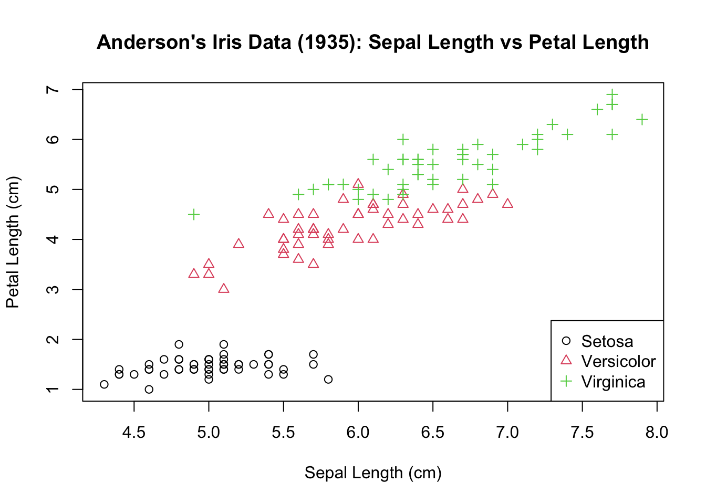